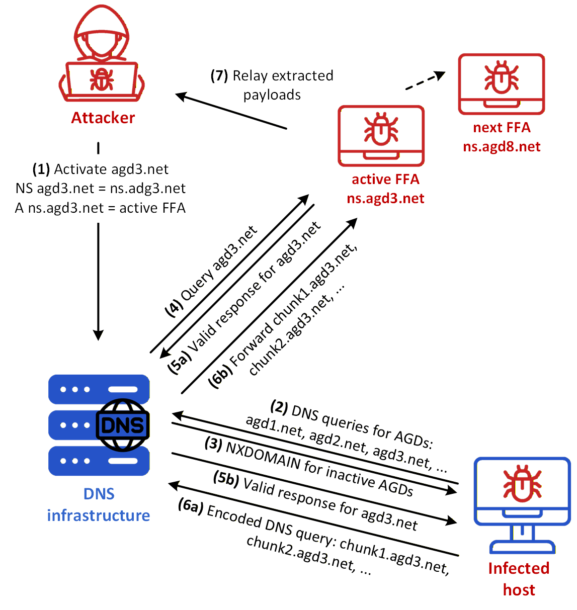
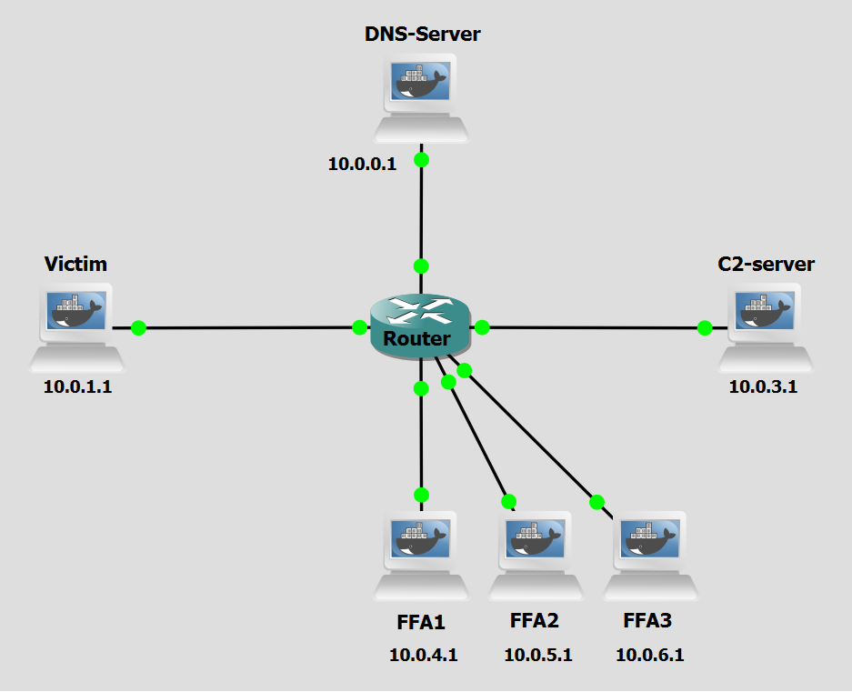

Background
The previous lab guides covered Fast Flux and DGAs as techniques to locate and reach an attacker-controlled machine, and DNS Tunneling as a covert channel for exfiltrating data and issuing commands once that connection is established. Each technique, in isolation, addresses a different layer of the attack: DGAs solve the problem of domain takedowns, Fast Flux solves the problem of IP and nameserver blacklisting, and DNS Tunneling solves the problem of traffic inspection and filtering.
When combined, these three techniques reinforce each other to produce an infrastructure with no stable component for a defender to target. DGAs ensure the bot always knows which domain to query next even after a takedown; Fast Flux ensures that neither the resolved IP nor the authoritative nameserver remains fixed long enough to be blocked; and DNS Tunneling ensures the subsequent communication is hidden inside a protocol that firewalls rarely inspect or restrict.
This lab explores a multi-layered attack that combines three previously explored DNS techniques to create a resilient and stealthy communication channel:
Domain Generation Algorithms (DGAs): Used to dynamically generate pseudo-random domain names, making it difficult for defenders to block communication using static lists.
Fast Flux Double: An evolution of Fast Flux that rotates both the A records (IP addresses of the service) and the NS records (authoritative nameservers) using a pool of compromised machines (Fast Flux Agents or FFAs), the rotated NS records will be the most relevant in this lab guide.
DNS Tunneling: A technique that encodes malicious data into the subdomains of DNS queries to bypass firewalls and exfiltrate data covertly.
It is recommended to first complete the aforementioned lab guides in order to understand the concepts and techniques involved.

Figure 1 shows an example of a combined Fast Flux/DGA/Tunneling Architecture. These are the steps in the figure:
- Step 1: The attacker runs the DGA, selects one generated domain, here agd3.net, activates it in the DNS infrastructure, and sets the NS and corresponding address information so that agd3.net is served by the active fast-flux agent ns.agd3.net. This creates the DNS condition needed for the infected host to discover the active domain. The use of a fast-flux agent as the authoritative endpoint allows the attacker to later rotate this role to another agent, such as ns.agd8.net.
- Step 2: The infected host runs the same DGA and sends DNS queries for the generated domains, such as agd1.net, agd2.net, and agd3.net, to the DNS infrastructure.
- Step 3: The DNS infrastructure returns NXDOMAIN responses for inactive AGDs. These negative replies are expected during the discovery phase and correspond to the trial-and-error behavior of DGA-based rendezvous. When the infected host queries the active AGD, the DNS infrastructure does not return NXDOMAIN; instead, it follows the configured delegation.
- Step 4: The DNS infrastructure queries the active fast-flux agent for agd3.net, because that agent is currently authoritative for the active AGD.
- Step 5a: The active fast-flux agent returns a valid DNS response for agd3.net to the DNS infrastructure.
- Step 5b: That valid response is returned to the infected host. This response indicates to the malware that agd3.net is the active rendezvous domain, and it therefore begins the tunneling phase under that domain.
- Step 6a: The infected host sends an encoded DNS query such as chunk1.agd3.net. The leftmost label carries a fragment of the data being exfiltrated. Because chunk1.agd3.net is a fresh subdomain under agd3.net, the DNS infrastructure forwards the query to the authoritative server for agd3.net.
- Step 6b: The query therefore reaches the active fast-flux agent.
- Step 7: The active fast-flux agent extracts or relays the encoded payload to the attacker. DNS responses may also carry information in the opposite direction, allowing the same channel to support command delivery as well as exfiltration.
Objectives
Our goal with the following configurations is to simulate a combined Fast Flux/DGAs/Tunneling attack. This lab demonstrates how attackers can combine three distinct techniques to use DGAs to generate and rotate command-and-control (C&C) domains, evading detection and maintaining resilient communication with compromised machines; abuse the DNS protocol to rapidly rotate IP addresses associated with a malicious domain as well as with a malicious nameserver, bypassing traditional network security controls that rely on static IP-based blacklists; and abuse the DNS protocol to encode and transmit data covertly, bypassing traditional network security controls that rarely inspect or block DNS traffic.
You will act as both the attacker and the infected host malware, executing scripts to generate domains, to dynamically update DNS records, to encode data into DNS queries, set up dynamic rogue authoritative nameservers to serve rotating A records and to receive and decode those queries' data establishing a covert communication channel.
Lab Prerequisites & Network Configuration

In the GNS3 project showed in Figure 2, you will need to add in the following topology that uses six key nodes (be sure to previously check the Lab Setup Guide):
| Node Name | Role | IP Address | Subnet |
|---|---|---|---|
| DNS-Server | DNS Server (BIND). Acts as both TLD server and Resolver | 10.0.0.1 | 10.0.0.0/24 |
| Victim | Infected Machine | 10.0.1.1 | 10.0.1.0/24 |
| C&C-Server (C2-Server) | Command and Control Server | 10.0.3.1 | 10.0.3.0/24 |
| FFA1 | Receives orders from Attacker. Acts as proxy | 10.0.4.1 | 10.0.4.0/24 |
| FFA2 | Receives orders from Attacker. Acts as proxy | 10.0.5.1 | 10.0.5.0/24 |
| FFA3 | Receives orders from Attacker. Acts as proxy | 10.0.6.1 | 10.0.6.0/24 |
The following scripts were used in this lab:
- tunneling_nameserver.py
- dga_banjori_attacker.py
- combined_choose_FFAs.py
- tunneling_attacker.py
- combined_victim.py
Phase 1: FFA Setup, Domain Generation and Registration
Step 1.1: Configure a Sudo User for Remote Commands
For the C&C Server to be able to run commands on the FFAs remotely via SHH it will need new user credentials.
On each FFA, run:
adduser test
usermod -aG sudo test
groups test
To simplify running commands, we will a no-password needed clause to certain commands used by the C&C Server.
visudo
At the end of the file add:
test ALL=(ALL) NOPASSWD: /usr/sbin/named, /usr/bin/pkill named, /usr/bin/python3, /usr/bin/tee
Step 1.2: Configure BIND on every FFA
Since any FFA in the botnet can become the authoritative nameserver for generated domain if the C&C Server commands it to, we have to configure the appropriate BIND files to make every FFA work as a nameserver.
On each FFA, edit these files:
nano /etc/bind/named.conf.options
options {
directory "/var/cache/bind";
recursion no;
listen-on port 53 { any; };
};
Step 1.3: Set up the DNS Exfiltrator
An FFA working as an authoritative nameserver for the generated domain also has to have an exfiltrator script so that it can exfiltrate the data to the C&C Server when acting as nameserver.
On each FFA, add the script:
nano /home/tunneling_nameserver.py
tunneling_nameserver.py script on the FFA acting as nameserver will capture DNS packets, extract the subdomain, and forward it to the data receiver.
This script has two concurrent responsibilities, handled via a main thread and a background worker thread: Packet sniffing (main thread), using Scapy, it listens on UDP port 53 for all incoming DNS queries. For every packet, it checks whether it's a TXT-record query (query type 16, qr == 0 meaning it's a question not a response) destined for the attacker.com domain. When it finds one, it strips the generated domain suffix and extracts just the subdomain prefix (which is the actual encoded data the victim machine sent); and data forwarding (background thread), in which, for each subdomain it pulls out, it opens a fresh TCP connection to 10.0.3.1:9999 and sends the subdomain string there.
Step 1.4: Add Zone Change Key to C&C Server
To be able to remotely update a nameserver's DNS records (in the combined_choose_FFAs.py script of Step 1.6), the C&C Server needs the key that was configured with the zone.
On the C&C-Server:
nano /home/ns-attacker-key.txt
key "ns-attacker" {
algorithm hmac-sha256;
secret "nvhsmRBHfjI0rKLsTY098adHHtbjRjh+3s8CH0S/k5o=";
};
and also:
nano /home/TLD-key.txt
key "TLD" {
algorithm hmac-sha256;
secret "nvhsmRBHfjI0rKLsTY098adHHtbjRjh+3s8CH0S/k5o=";
};
Step 1.5: Generate the AGD List and Select the Domain
On the C&C-Server, add and modify the script:
nano /home/dga_banjori_attacker.py
Remove the seed 'tuvydgaattack.pt' and add instead 'tuvydgaattack.com', ending with .com TLD.
Now, run:
python3 /home/dga_banjori_attacker.py
In this script, a list of 500 domains is generated based on the seed and following the Banjori algorithm, a random AGD is chosen at the end.
Step 1.6: Select the FFAs
Now you will have to select two Fast Flux Agents. One for being the proxy (not applicable in this case since we will be using tunneling) and the other to be the nameserver for generated domain. There are three available machines. We selected FFA1 to be the authoritative nameserver.
On the C&C-Server, run:
python3 /home/combined_choose_FFAs.py --domain DGA_DOMAIN --ip FFA1_IP
The combined_choose_FFAs.py script , using ssh: starts the BIND service on the selected FFA to be the authoritative nameserver (FFA1 in this case); does a nsupdate request to the DNS Server, which includes deleting any previous NS record of the generated domain (e.g. tuvydgaattack.com), and adding a new A record of the corresponding nameserver domain (e.g. ns1.tuvydgaattack.com) with IP address of FFA1, with a TTL of 60 seconds; modifies the necessary BIND configuration files of FFA1, such as named.conf.local and the adds a new zone file for the generated domain; does a nsupdate request to FFA1, which includes deleting any previous A record of domain cc.attacker.com, and adding a new A record with IP address of FFA1, also with a TTL of 60 seconds. Finally, it background-runs the tunneling_nameserver.py script in FFA1 in order for it to send the extracted data to the C&C Server.
You can see which FFA currently has the role of authoritative nameserver by runnning netstat -tulnp | grep 53 in each FFA. Only one will return the listenning ports associated with a DNS server.
Phase 2: Activation and Data Exfiltration
Step 2.1: Activating the C&C Server
On the C&C-Server, run:
python3 /home/tunneling_attacker.py
The tunneling_attacker.py script on the C&C Server machine will listen on a TCP port to collect the final exfiltrated data forwarded by tunneling_nameserver.py on the nameserver-acting FFA.
To listen for connections, it binds a TCP socket to port 9999 on all available network interfaces (0.0.0.0), until an incoming connection arrives. In the full attack chain, this script is the passive endpoint, it just prints whatever subdomains the exfiltrator forwards, which would be the base64-encoded (or otherwise encoded) data chunks originally sent via DNS queries from the Victim machine.
Step 2.2: Prepare the Data
On the Victim machine, create the file(s) and populate them with a few lines of text:
nano /home/passwords.txt
[CONFIDENTIAL - INTERNAL USE ONLY]
--- CONTRACT DETAILS ---
Contract #12345
Agreement between XYZ Corporation and ABC Limited
Effective Date: 2025-10-15
Term: 24 months
Payment Terms:
- Monthly: $15,000
- Bank Account: 1234-5678-9012-3456 (Fake Bank of Portugal)
--- PERSONAL INFORMATION ---
Employee ID: EMP-7890
Name: João Silva
Address: Rua da Liberdade 123, 1200-001 Lisboa, Portugal
National ID: 123456789 (Placeholder)
2025-11-01: Contract renewal pending. Financial review required
2025-11-02: Security audit flagged potential vulnerability in data storage
Step 2.3: Victim Initiates the Connection
Do a Wireshark capture right next to the Victim interface, another next to the C&C Server and yet another next to the DNS Server (as a tip, use a “dns” filter to better analyze the relevant DNS packets).
On the Victim machine, run:
python3 /home/combined_victim.py
The script combined_victim.py generates a list of 500 domains, performs iterative DNS queries to the DNS Server until one resolves to an IP address (the selected FFA's), reads a few files like passwords.txt and uses each line as a subdomain for a DNS query, it performs the DNS queries that initiate the tunneling process.
Observe the quantity and diversity of DNS messages the Victim machine is communicating with. Look into the Wireshark captures to see the process in detail. You can check the extracted data in the C&C Server console.
Question
Compare the Wireshark captures next to the Victim and next to the C&C Server, what does each capture reveal?
Answer
The capture next to the Victim shows DNS queries going to the DNS Server (the resolver), not to any FFA or attacker-controlled machine directly. The subdomains carry the encoded sensitive data, but from the Victim's perspective all traffic looks like ordinary recursive DNS resolution — the Victim never establishes a direct connection to any attacker infrastructure. The capture next to the C&C Server shows the exfiltrated data arriving via TCP from the FFA acting as nameserver, forwarded after the FFA extracted it from the tunneled subdomain.
In the standalone DNS Tunneling lab, the Victim sent its tunneling queries (after passing through a resolver) to the Attacker Nameserver, a fixed and known machine. In this combined attack, the Victim's tunneling queries are instead routed through the DNS resolution chain to whichever FFA is currently acting as authoritative nameserver.
Question
What does a defender monitoring only the Victim's traffic conclude about the destination of the exfiltrated data?
Answer
A defender monitoring only the Victim's traffic sees DNS queries directed at the DNS Server, a legitimate recursive resolver, and nothing else. The Victim never contacts any attacker-controlled machine directly, so the exfiltrated data appears to be ordinary DNS traffic to a trusted local node, and the true destination remains completely invisible from this position.
Question
What is a defender monitoring the DNS Server's traffic able to conclude? How does the combination of techniques affect what it can detect, and is there any indicator that remains useful?
Answer
A defender monitoring the DNS Server's traffic has a wider view: they can observe the DNS Server querying the TLD Server and then forwarding queries to whichever FFA is currently acting as authoritative nameserver. However, in this combined attack, the IP rotation and domain rotation are paired — every new DGA domain comes with a freshly assigned FFA as nameserver. This means that from the DNS Server's perspective, each domain is only ever seen resolving to one IP and being served by one nameserver before it is abandoned. There is no accumulation of distinct IPs or nameservers per domain, which is exactly what traditional Fast Flux and DGA detectors at the resolver level rely on. In a standalone Fast Flux attack the domain stays fixed so IP rotation becomes visible over time; in a standalone DGA attack the nameserver stays fixed so the NXDOMAIN flood is attributable to a single infrastructure. Here, both anchors are gone simultaneously.
What does remain detectable at the DNS Server level, and equally so as in the classic standalone tunneling lab, is the tunneling signal itself: the subdomains being queried are unusually long and high-entropy regardless of which domain or FFA they are directed at. This characteristic is intrinsic to the encoding of data into subdomains and is not affected by domain or IP rotation. Subdomain length and entropy analysis at the resolver therefore remains a valuable countermeasure even against this combined attack, and is the one indicator that the combination of techniques does not degrade.
Phase 3: FFA and Domain Rotation
While maintaining the C&C Server data receiver script running, we will use an auxiliary console of C&C Server to remotely update the IP addresses and the domain (select Auxiliary Console option).
Step 3.1: Generating a new Domain
Run on the C&C Server to select a new generated domain.
python3 /home/dga_banjori_attacker.py
Step 3.2: Rotating the Domain and the IP Address
Now you will have to choose a different Fast Flux Agent to be authoritative nameserver. There are two available machines. We selected FFA2.
On the C&C-Server auxiliary console, run:
python3 /home/combined_choose_FFAs.py --domain NEW_DGA_DOMAIN --ip FFA2_IP
To simulate the resilience expected when using a Fast Flux and a DGA techniques, the attacker (using C&C Server machine) now has to register a new domain and a new IP address for the authoritative nameserver of the new domain.
Step 3.3: New Victim Connection
Now let's simulate a new victim connecting.
On the Victim machine, run the script again:
python3 /home/combined_victim.py
Question
After re-running combined_victim.py on the Victim, which FFA does the Victim ultimately send its DNS tunneling queries to, and how does the resolution path differ from the first session?
Answer
On restart, the Victim queries the DNS Server, this then queries FFA2 which is now acting as the authoritative nameserver for the newly generated DGA domain (instead of FFA1 as before) and receives the tunneled DNS TXT queries from the Victim. So both layers have shifted: the NS role has moved from FFA1 to FFA2, and the domain itself has changed to a newly generated AGD. The Victim is now communicating with an entirely different machine and domain compared to the first session, despite following the exact same DGA algorithm to locate the C&C infrastructure.
Conclusion
This lab demonstrated that the combination of Fast Flux, Domain Generation Algorithms, and DNS Tunneling produces an attack that is qualitatively more resilient than the sum of its parts. Each technique, taken individually, leaves a detectable residue that a well-positioned monitoring system can exploit. DGAs leave a trail of NXDOMAIN failures. Fast Flux leaves a trail of rotating IPs that accumulate against a stable domain name. DNS Tunneling leaves a trail of anomalously long subdomains at high query rates against a stable nameserver.
When the three techniques are combined, each of those residual signals is degraded or erased by one of the other layers: the DGA removes the stable domain name that the Fast Flux detector relies on; the Fast Flux removes the stable nameserver IP that a tunneling blocker could target; and the domain rotation can distribute the tunneling query load thinly enough to evade rate-based detection.
The result is an infrastructure in which there is no component — no IP address, no domain name, no nameserver — that remains stable long enough for a defender to anchor a reactive countermeasure against. Every element that a defender might attempt to block has already been replaced by the time the block takes effect. Effective detection of this class of attack cannot rely on reactive, threshold-based rules applied to individual protocol layers in isolation. It requires correlating signals across layers — DNS resolution behaviour, query content, and infrastructure topology — and applying approaches capable of identifying coordinated anomalies that individually fall below detection thresholds.
Question
Considering the three-layer combined attack explored in this lab, propose a detection strategy that could identify this attack without relying on any single stable observable (fixed domain name, fixed IP, or fixed nameserver). What data sources would you correlate, and at what point in the DNS resolution chain would you position your monitoring?
Answer
An effective strategy must abandon the assumption that any single observable will remain stable. Instead, detection should be based on behavioural fingerprinting across multiple signals simultaneously. The monitoring point should be the Resolver, since it is the only node in the resolution chain that observes all three layers: it sees the DGA-generated domain names (and their failure rate), the authoritative nameserver IPs serving those domains, and the content of the queries themselves (including subdomain length and structure). At that position, a detector could correlate: a cluster of pseudo-random domain names being queried by the same source host (DGA signal); unusually long or high-entropy subdomains appearing within queries to those ephemeral domains (tunneling signal); and short TTLs on both A and NS records across the observed domains (Fast Flux signal). Note that NS IP rotation, the defining observable of Fast Flux in isolation, is not reliably detectable here because the domain rotates with every DGA cycle, the Resolver never accumulates enough NS IP observations per domain to flag rotation as suspicious. No single one of the remaining signals needs to cross a standalone threshold — instead, the simultaneous co-occurrence of all of them, even at sub-threshold levels, should itself constitute a high-confidence alert. This is fundamentally a multivariate anomaly detection problem, and it is best addressed with machine learning models trained on labelled DNS traffic that include combined attack scenarios, rather than hand-crafted rules designed for isolated techniques.